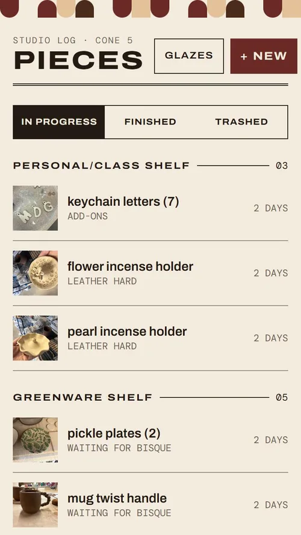
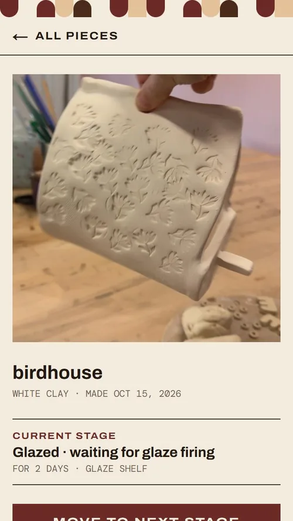
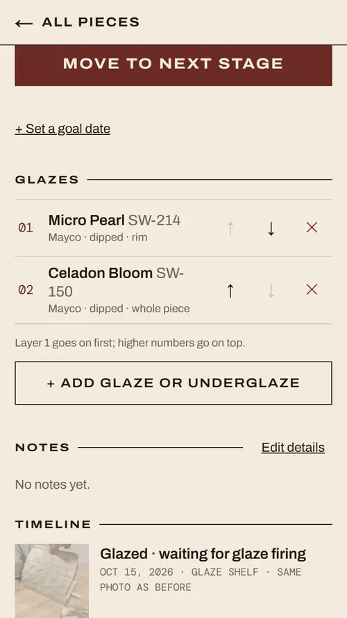
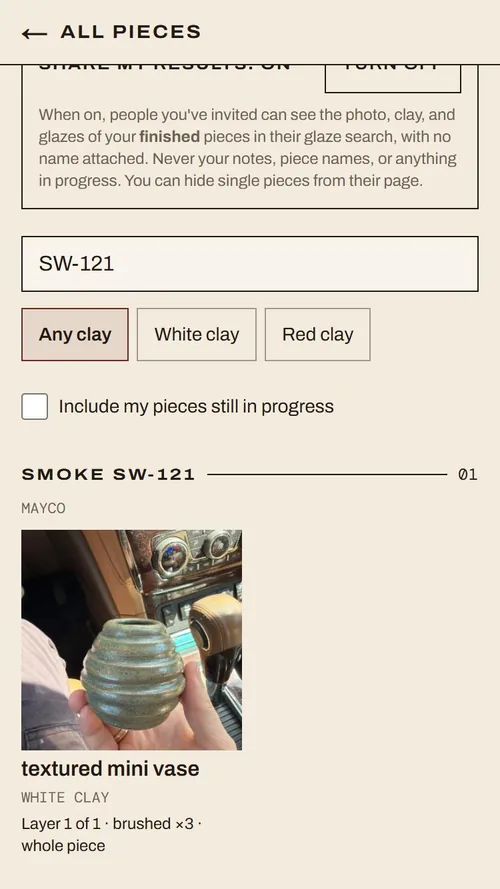

Case study
Pottery tracker
I made a phone app for my pottery practice, and I use it every time I'm at the studio. It follows each piece from wet clay to the final firing: what stage it's in, which shelf it's on, what glazes went on, and how they came out.
You'd think you'd remember every piece you make, but the truth is a piece takes weeks to finish and it's easy to lose track of things on the shelves. I had been using the Notes app on my iPhone to keep track, but I was losing a lot of detail. I wanted one place that held a photo at every stage, the shelf, and the glaze recipe together, on my phone, while I'm at the studio.
What it does









Stage timeline
Every piece keeps a dated history with a photo, shelf, and note at each stage. I can always see how long it's been sitting. A leather hard piece can't wait long to be trimmed.
Shelves
Picking a stage suggests the usual shelf. The home screen groups pieces by shelf, with the ones that have waited longest at the top.
Goals and Due soon
I can set a goal like "glaze fired by Nov 20." Anything due within a week moves to the top of the home screen.
Glaze layers
Each layer in order: dipped or brushed, how many coats, and where it went (whole piece, inside, outside, or rim).
Search by glaze
I can type a glaze, filter by white or red clay, and see every finished piece that used it and what it was paired with. Now "what did Smoke look like on white clay?" takes seconds instead of a camera roll scroll.
Trash with a reason
Pieces that crack or fail go to a trashed list with what went wrong, so I can learn from them later.
Product decisions
I acted as the product manager and designer, and Claude Code wrote the code. I set the requirements, made the design and privacy calls, and tested everything on my own phone.
Before any code, I wrote out the stages, the four shelves, how glazes get layered, and who should be able to see what.
Pieces and photos first, then shelves and glazes, then goals, then glaze search and sharing.
After each phase I used it at the studio and sent feedback before starting the next one.
Once the app did its job, I restyled it using a Pinterest board of mid-century patterns and type I'd saved early on.
Google sign-in with an invite list
Nobody has to make a password. You sign in with your Google account, and only emails on my invite list get in. Everyone else sees a message that they aren't on the list. Inviting a friend takes two steps, one in Google and one in the app. It's a little manual, but for a handful of people I'd rather have that control.
Privacy checks on every update
Everyone's pieces live in the same database, so I wanted proof nobody could see someone else's. Nine automatic checks try to open, edit, or delete another person's piece before every update. If one fails, the update is blocked. To test the tests, we removed a privacy rule on purpose. Two checks failed and pointed right at the leak.
Anonymous sharing, off by default
Friends can choose to share finished pieces so everyone's glaze search has more examples. A shared result only shows the photo, clay, and glazes. No name, notes, or email. I decided not to even label them "from a friend."
A real glaze catalog
I turned my local clay store's stock list into 575 searchable mid-fire glazes and underglazes. Typing "PC-20" finds Blue Rutile. Keeping names consistent is what makes searching by glaze work later.
Photos and hosting
This was my first time hosting on Vercel. Photos are stored privately, with no public links, and the phone shrinks each photo and removes its location before uploading. I tested with fake accounts on a practice copy of the database, so my real pieces were never at risk.
A home screen app over the App Store
There's no review process, and updates go live as soon as they're pushed. The trade-off is that iPhone notifications are weak for web apps, so reminders became a Due soon list inside the app.
Designing from a mood board
I saved a Pinterest board early on with Bauhaus half-circle patterns, pottery silhouettes, and vintage type specimens. I steered away from the rounded cards and soft gradients a lot of AI-built apps have. The half circles became a strip across the top of every screen, the silhouettes stand in when a piece doesn't have a photo yet, and the wide capital headings came from the type specimens. The colors are oxblood, paper, and ink.
Making it faster after launch
Once my real pieces were in it, I started fixing what felt slow. Lists now load a 25 KB small copy of each photo instead of the 300 KB full one, which is about 7x lighter on studio wifi. The list of 575 glazes only loads when I tap "Add glaze," instead of every time I open a piece.
What I learned
Iterate as much as you can. The first version of almost every screen changed once I used it at the studio. The stage dropdown became a row of stops you tap, and the back button got bigger and stays at the top while you scroll. None of that showed up until I was actually using it.
Test a lot. I tested on my phone after every phase and checked every privacy rule before every update. The more I tested, the less I was guessing.
Think about more than just me. I'm not the only person who will use this. Friends might not want their name on a shared glaze photo, and someone new needs a clear message if they aren't on the invite list yet. Putting myself in their shoes shaped a lot of the privacy decisions.
Building for a phone is different. I had always built for a desktop. A screen that looked fine on my laptop broke on my iPhone, so after that I checked every change at phone size. Tap targets, spacing, and how much fits on a screen all needed their own decisions.
Show it, don't just describe it. The app is invite only, so most people reading this can't open it. A short walkthrough with my real pieces shows what it does faster than any paragraph I could write.
Next, I want to see how my friends actually use sharing, and whether they'd rather know who a result came from.